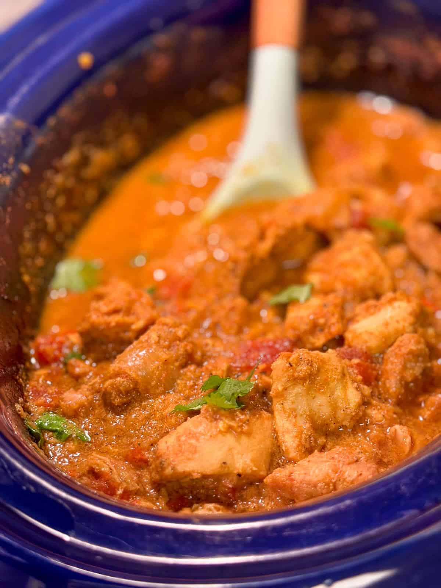

GO BACK
Slow Cooker Spicy Chicken Curry

Image of spicy slow cooked chicken curry
- Step One: Soften the onions, seal the chicken, and stir in garlic and spices.
- Step Two: Allow to cook for a few minutes until the spices release their fragrance.
- Step Three: Add the stock, coconut milk, tomatoes, and a little sugar, before slow cooking for 3-4 hours.
- Step Four: Serve with boiled rice or Chapatti.
Ingredients Needed!
Onions, chicken breast slices, garlic, bell peppers. 1 Cup coconut milk, a tiny amount of tomatoes, and 1/2 cup of sugar.